4 ggplot2によるグラフ作成
第4章「ggplot2によるグラフ作成」では、tidyverseのggplot2パッケージを使用したグラフ作成のコードについて解説します。
4.1 パッケージのインポート
library(esquisse)
library(geofacet)
library(ggplotgui)
library(ggpubr)
library(ggsci)
library(ggrepel)
library(lemon)
library(magrittr)
library(openxlsx)
library(RColorBrewer)
library(readxl)
library(tidyverse)4.2 ggplot2とは
ggplot2パッケージでは、最初にggplot()関数でグラフを作成するデータセットと変数を指定します。その後に、geom_histogram()などのグラフの種類を指定する関数や、scale_x_dateなどの軸設定の関数、theme()などの各種設定の関数を+で追加していきます。
ggplot()関数では、data引数にtibble形式のデータセットを指定します。mapping引数には必ずaes()関数を指定し、aes()関数の中でX軸やY軸の変数、必要に応じてcolorやsizeなど変数の値に応じて変化させる色・サイズなどの要素を指定します。
なお、グラフの種類により、X軸、Y軸に指定できる変数の型（連続型、離散型）が決まっていますので、注意してください。
ggplot2パッケージの詳細については公式ウェブサイトを参照してください。各関数の使い方については、公式ウェブサイトのチートシートが分かりやすくまとまっています。
4.3 ggplot2の設定
## ggplotのテーマ設定（Excelのグラフと類似したテーマを選択）
theme_set(theme_light())
## Windowsにおけるggplot2の日本語フォント設定
windowsFonts("MEIRYO" = windowsFont("Meiryo UI"))
windowsFonts("YUGO" = windowsFont("Yu Gothic UI"))4.4 サンプルデータの確認・読み込み
Rのサンプルデータセット
# irisデータセット
iris_tbl <- as.tibble(iris)
iris_tbl## # A tibble: 150 x 5
## Sepal.Length Sepal.Width Petal.Length Petal.Width Species
## <dbl> <dbl> <dbl> <dbl> <fct>
## 1 5.1 3.5 1.4 0.2 setosa
## 2 4.9 3 1.4 0.2 setosa
## 3 4.7 3.2 1.3 0.2 setosa
## 4 4.6 3.1 1.5 0.2 setosa
## 5 5 3.6 1.4 0.2 setosa
## 6 5.4 3.9 1.7 0.4 setosa
## 7 4.6 3.4 1.4 0.3 setosa
## 8 5 3.4 1.5 0.2 setosa
## 9 4.4 2.9 1.4 0.2 setosa
## 10 4.9 3.1 1.5 0.1 setosa
## # ... with 140 more rows# mpgデータセット
mpg## # A tibble: 234 x 11
## manufacturer model displ year cyl trans drv cty hwy fl class
## <chr> <chr> <dbl> <int> <int> <chr> <chr> <int> <int> <chr> <chr>
## 1 audi a4 1.8 1999 4 auto~ f 18 29 p comp~
## 2 audi a4 1.8 1999 4 manu~ f 21 29 p comp~
## 3 audi a4 2 2008 4 manu~ f 20 31 p comp~
## 4 audi a4 2 2008 4 auto~ f 21 30 p comp~
## 5 audi a4 2.8 1999 6 auto~ f 16 26 p comp~
## 6 audi a4 2.8 1999 6 manu~ f 18 26 p comp~
## 7 audi a4 3.1 2008 6 auto~ f 18 27 p comp~
## 8 audi a4 quattro 1.8 1999 4 manu~ 4 18 26 p comp~
## 9 audi a4 quattro 1.8 1999 4 auto~ 4 16 25 p comp~
## 10 audi a4 quattro 2 2008 4 manu~ 4 20 28 p comp~
## # ... with 224 more rows# diamondsデータセット
diamonds## # A tibble: 53,940 x 10
## carat cut color clarity depth table price x y z
## <dbl> <ord> <ord> <ord> <dbl> <dbl> <int> <dbl> <dbl> <dbl>
## 1 0.23 Ideal E SI2 61.5 55 326 3.95 3.98 2.43
## 2 0.21 Premium E SI1 59.8 61 326 3.89 3.84 2.31
## 3 0.23 Good E VS1 56.9 65 327 4.05 4.07 2.31
## 4 0.29 Premium I VS2 62.4 58 334 4.2 4.23 2.63
## 5 0.31 Good J SI2 63.3 58 335 4.34 4.35 2.75
## 6 0.24 Very Good J VVS2 62.8 57 336 3.94 3.96 2.48
## 7 0.24 Very Good I VVS1 62.3 57 336 3.95 3.98 2.47
## 8 0.26 Very Good H SI1 61.9 55 337 4.07 4.11 2.53
## 9 0.22 Fair E VS2 65.1 61 337 3.87 3.78 2.49
## 10 0.23 Very Good H VS1 59.4 61 338 4 4.05 2.39
## # ... with 53,930 more rows# economicsデータセット
economics## # A tibble: 574 x 6
## date pce pop psavert uempmed unemploy
## <date> <dbl> <dbl> <dbl> <dbl> <dbl>
## 1 1967-07-01 507. 198712 12.6 4.5 2944
## 2 1967-08-01 510. 198911 12.6 4.7 2945
## 3 1967-09-01 516. 199113 11.9 4.6 2958
## 4 1967-10-01 512. 199311 12.9 4.9 3143
## 5 1967-11-01 517. 199498 12.8 4.7 3066
## 6 1967-12-01 525. 199657 11.8 4.8 3018
## 7 1968-01-01 531. 199808 11.7 5.1 2878
## 8 1968-02-01 534. 199920 12.3 4.5 3001
## 9 1968-03-01 544. 200056 11.7 4.1 2877
## 10 1968-04-01 544 200208 12.3 4.6 2709
## # ... with 564 more rows外部データセット
Webからデータを直接読み込むため、プロキシ環境ではプロキシサーバーの設定が必要です。
## プロキシサーバーとポートを記入
proxy_url <- "http://proxyserver:port/"
## Rのシステム環境変数を設定
Sys.setenv("http_proxy" = proxy_url)
Sys.setenv("https_proxy" = proxy_url)
## Rのダウンロードオプションを設定
options(download.file.method = "libcurl")
options(timeout = NA)まず、Our World in Dataの新型コロナウイルス関連データを読み込みます。データの詳細はこちらを参照してください。
Hannah Ritchie, Edouard Mathieu, Lucas Rodés-Guirao, Cameron Appel, Charlie Giattino, Esteban Ortiz-Ospina, Joe Hasell, Bobbie Macdonald, Diana Beltekian and Max Roser (2020) - “Coronavirus Pandemic (COVID-19)”. Published online at OurWorldInData.org. Retrieved from: ‘https://ourworldindata.org/coronavirus’ [Online Resource]
# Our World in Dataの新型コロナデータをtibble型で読み込み
data_owid <- readr::read_csv(file = "https://covid.ourworldindata.org/data/owid-covid-data.csv", # ファイルパス／URL
col_names = TRUE, # ヘッダー（列名データ）の有無
col_types = NULL, # 各列の型の指定（c：文字列型、d：数値型、D：日付型、l：論理値型）
skip = 0) # 読み込み時に上からスキップする行数## Rows: 188544 Columns: 67
## -- Column specification --------------------------------------------------------
## Delimiter: ","
## chr (4): iso_code, continent, location, tests_units
## dbl (62): total_cases, new_cases, new_cases_smoothed, total_deaths, new_dea...
## date (1): date
##
## i Use `spec()` to retrieve the full column specification for this data.
## i Specify the column types or set `show_col_types = FALSE` to quiet this message.# データをコンソールに出力
data_owid## # A tibble: 188,544 x 67
## iso_code continent location date total_cases new_cases new_cases_smoot~
## <chr> <chr> <chr> <date> <dbl> <dbl> <dbl>
## 1 AFG Asia Afghani~ 2020-02-24 5 5 NA
## 2 AFG Asia Afghani~ 2020-02-25 5 0 NA
## 3 AFG Asia Afghani~ 2020-02-26 5 0 NA
## 4 AFG Asia Afghani~ 2020-02-27 5 0 NA
## 5 AFG Asia Afghani~ 2020-02-28 5 0 NA
## 6 AFG Asia Afghani~ 2020-02-29 5 0 0.714
## 7 AFG Asia Afghani~ 2020-03-01 5 0 0.714
## 8 AFG Asia Afghani~ 2020-03-02 5 0 0
## 9 AFG Asia Afghani~ 2020-03-03 5 0 0
## 10 AFG Asia Afghani~ 2020-03-04 5 0 0
## # ... with 188,534 more rows, and 60 more variables: total_deaths <dbl>,
## # new_deaths <dbl>, new_deaths_smoothed <dbl>, total_cases_per_million <dbl>,
## # new_cases_per_million <dbl>, new_cases_smoothed_per_million <dbl>,
## # total_deaths_per_million <dbl>, new_deaths_per_million <dbl>,
## # new_deaths_smoothed_per_million <dbl>, reproduction_rate <dbl>,
## # icu_patients <dbl>, icu_patients_per_million <dbl>, hosp_patients <dbl>,
## # hosp_patients_per_million <dbl>, weekly_icu_admissions <dbl>, ...次に、内閣府の県内総生産データを読み込みます（生産側、名目、2008SNA、平成23年基準計数）。詳細はこちらを参照してください。ここではデータをdata.frame形式で読み込み、前処理して縦型のtibble形式に変換します。
# 内閣府の県内総生産データをdata.frame形式で読み込み
data_gdp_pref <- openxlsx::read.xlsx(xlsxFile = "https://www.esri.cao.go.jp/jp/sna/data/data_list/kenmin/files/contents/tables/2018/soukatu1.xlsx", # ファイルパス／URL
sheet = 1, # シートインデックス／シート名
startRow = 5, # 読み込み開始行
colNames = TRUE, # 列名データの有無
rowNames = FALSE, # 行名データの有無
rows = 5:53, # 読み込む列（NULLですべて読み込み）
cols = NULL) # 読み込む行（NULLですべて読み込み）
# データの型変換等を行い、縦型に変形したうえで、変化率系列を作成し、tibble形式に変換
data_gdp_pref %<>%
dplyr::mutate(across(`2006`:`2018`, as.double)) %>%
dplyr::rename(pref_code = X1,
pref_name = X2) %>%
dplyr::select(-X16) %>%
tidyr::pivot_longer(cols = c(-"pref_code", -"pref_name"), names_to = "year", values_to = "gdp_nominal") %>%
dplyr::mutate(across(c(pref_code, year), as.double)) %>%
dplyr::arrange(pref_code, year) %>%
dplyr::group_by(pref_name) %>%
dplyr::mutate(gdp_nominal_pchg = 100 * (gdp_nominal / dplyr::lag(gdp_nominal, n = 1) - 1)) %>%
dplyr::ungroup() %>%
tibble::as_tibble()
data_gdp_pref## # A tibble: 611 x 5
## pref_code pref_name year gdp_nominal gdp_nominal_pchg
## <dbl> <chr> <dbl> <dbl> <dbl>
## 1 1 北海道 2006 19316568 NA
## 2 1 北海道 2007 19137599 -0.927
## 3 1 北海道 2008 18457858 -3.55
## 4 1 北海道 2009 18219113 -1.29
## 5 1 北海道 2010 18122675 -0.529
## 6 1 北海道 2011 18071493 -0.282
## 7 1 北海道 2012 17923502 -0.819
## 8 1 北海道 2013 18242119 1.78
## 9 1 北海道 2014 18579766 1.85
## 10 1 北海道 2015 19128504 2.95
## # ... with 601 more rows4.5 GUI形式の直感的なグラフ作成
本節ではggplot2パッケージによるグラフ作成を行いますが、ggplot2はすべてコードを書いてグラフを作成するため、探索的データ分析（EDA）には不向きです。そこで、ggplot2によるグラフ作成を行う前に、GUIによるノーコードのグラフ作成パッケージを用い、どのようなグラフを作成するべきか検討します。
esquisseパッケージ
esquisseパッケージは、ドラッグ＆ドロップでX軸・Y軸の変数や色・サイズを変化させる属性の変数を指定し、グラフを作成します。esquisseは便利なパッケージですが、データセットの規模が大きいと起動に時間がかかるため、変数の数が多い場合は、あらかじめ注目する変数を絞るといった前処理が必要です。
Rで下記のコードを実行すると別のウィンドウでesquisseの画面が立ち上がり、インタラクティブな図表作成を行うことができます。ここではコードを示すのみにとどめており、実行していませんので、各自で試してみてください。
# irisデータ
esquisse::esquisser(data = iris)## 世界の新型コロナデータの一部を抽出
data_owid %>%
dplyr::select(location, date, new_cases_smoothed) %>%
dplyr::filter(location %in% c("Japan", "United States", "United Kingdom", "Germany", "France", "Italy")) %>%
esquisse::esquisser()ggplotguiパッケージ
その他のGUIによるノーコードのグラフ作成パッケージには、ggplotguiがあります。
# irisデータ
ggplotgui::ggplot_shiny(data = iris)## 世界の新型コロナデータの一部を抽出
data_owid %>%
dplyr::select(location, date, new_cases_smoothed) %>%
dplyr::filter(location %in% c("Japan", "United States", "United Kingdom", "Germany", "France", "Italy")) %>%
ggplotgui::ggplot_shiny()
4.7 1次元の度数分布（連続型）
連続型変数の1次元の度数分布を作成するには、ヒストグラムを用います。ヒストグラムを作成するにはgeom_histogram()関数やgeom_freqpoly()関数を使用します。
- X軸：連続型変数
- Y軸：なし
ヒストグラムの基本形
ggplot(data = mpg,
mapping = aes(x = hwy)) +
geom_histogram(binwidth = 5, # 階級幅
color = "gray", # 線の色
fill = "darkblue", # 塗りつぶしの色
size = 0.5) # 線の太さ
横並びヒストグラム
グループ別のヒストグラムを横並び形式で作成するには、position引数に"dodge"を指定します。
ggplot(data = mpg,
mapping = aes(x = hwy, fill = class)) +
geom_histogram(binwidth = 5, # 階級幅
position = "dodge", # 横並びポジション
color = "black", # 線の色
size = 0.5) # 線の太さ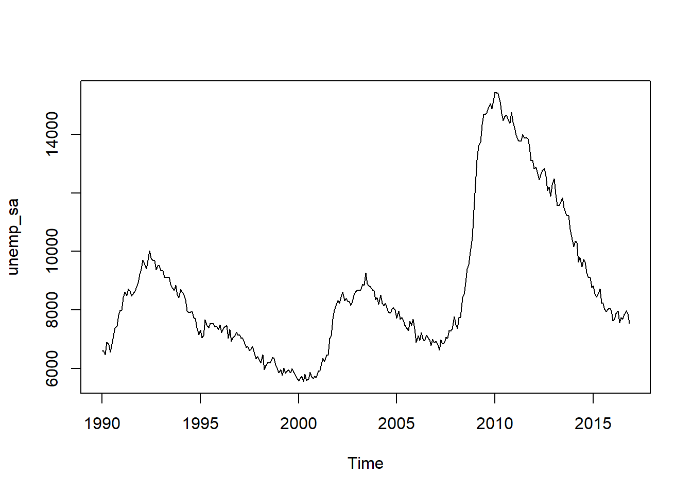
グループ別の度数分布はgeom_freqpoly()関数でも可視化することができます。
ggplot(data = mpg,
mapping = aes(x = hwy, color = class)) +
geom_freqpoly(binwidth = 5, # 階級幅
size = 0.5) # 線の太さ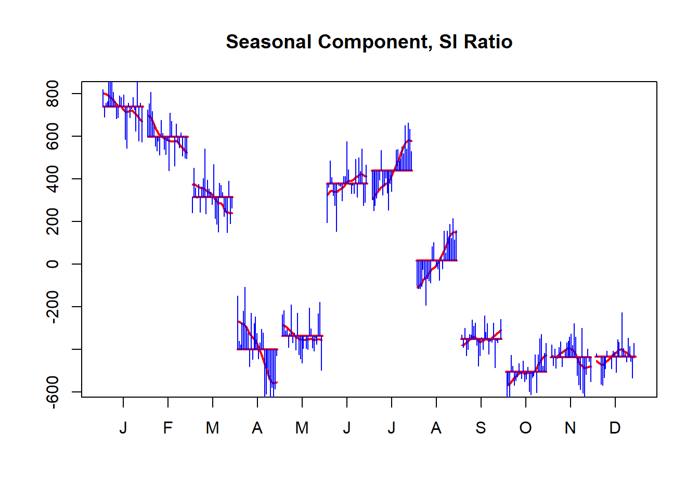
4.8 1次元の密度グラフ
密度グラフはgeom_density()関数で作成します。
- X軸：連続型変数
- Y軸：なし
密度グラフの基本形
ggplot(data = mpg,
mapping = aes(x = hwy)) +
geom_density(kernel = "gaussian", # カーネル関数の種類
color = "darkblue", # 線の色
linetype = "solid", # 線の種類（solid / dashed / dotted / dotdash / twodash / longdash）
size = 1.0) # 線の太さ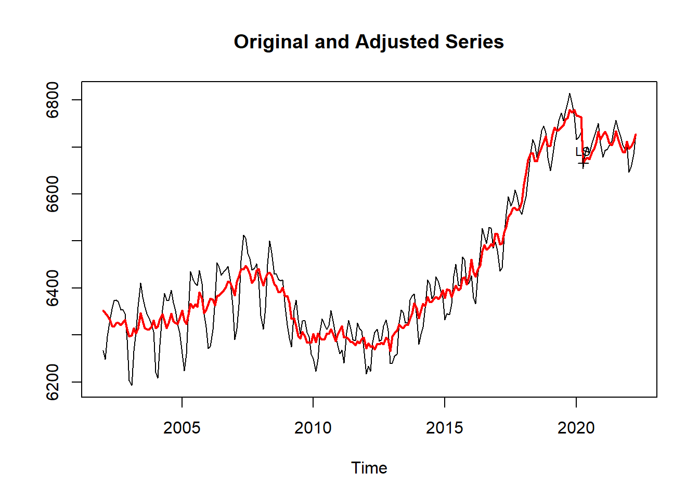
横並び密度グラフ
グループ別の密度グラフを横並び形式で作成するには、position引数に"dodge"を指定します。
ggplot(data = mpg,
mapping = aes(x = hwy, color = class)) +
geom_density(kernel = "gaussian", # カーネル関数の種類
position = "dodge", # 横並びポジション
linetype = "solid", # 線の種類（solid / dashed / dotted / dotdash / twodash / longdash）
size = 1.0) # 線の太さ
横並びの密度グラフはgeom_freqpoly()関数でも作成できます。geom_freqpoly()関数でmapping = aes(y = ..density..)を指定すると、各グループの度数を標準化して密度グラフに変換します。
ggplot(data = mpg,
mapping = aes(x = hwy, y = ..density.., color = class)) +
geom_freqpoly(binwidth = 5, # 階級幅
size = 0.5) # 線の太さ
積み上げ密度グラフ
グループ別の密度グラフを積み上げ形式で作成するには、position引数に"stack"を指定します。
ggplot(data = mpg,
mapping = aes(x = hwy, fill = class)) +
geom_density(kernel = "gaussian", # カーネル関数の種類
position = "stack", # 積み上げポジション
color = "black", # 線の色
linetype = "solid", # 線の種類（solid / dashed / dotted / dotdash / twodash / longdash）
size = 0.5) # 線の太さ4.9 2次元の度数分布（離散型）
離散型変数の2次元の度数分布を作成するには、度数バブルチャートや度数ヒートマップを用います。度数バブルチャートを作成するにはgeom_count()関数を使用します。また、離散型変数の度数ヒートマップを作成するにはgeom_tile()関数を使用します。
- X軸：離散型変数
- Y軸：離散型変数
度数バブルチャートの基本形
ggplot(data = mpg,
mapping = aes(x = manufacturer, y = class)) +
geom_count(alpha = 0.5, # 塗りつぶしの透明度
color = "darkblue", # 線の色
fill = "lightblue", # 塗りつぶしの色
shape = 21, # マーカーの種類
stroke = 0.5) + # 線の太さ
scale_size_area(max_size = 15) + # 変量とマーカーの面積を比例させる
theme(axis.text.x = element_text(angle = 45, hjust = 1.0))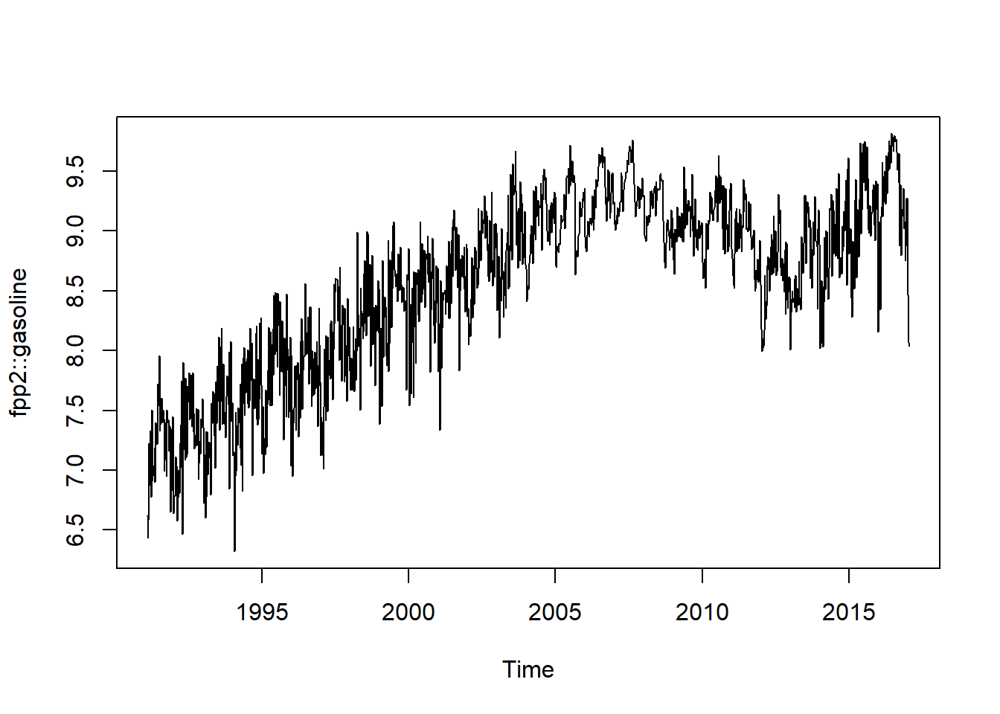
度数ヒートマップの基本形
ggplot(data = mpg %>%
dplyr::count(manufacturer, class), # データの度数を格納した変数を作成
mapping = aes(x = manufacturer, y = class, fill = n)) +
geom_tile(height = 1.0, # タイルの高さ
width = 1.0, # タイルの幅
alpha = 1.0, # 塗りつぶしの色の透明度
color = "grey", # 線の色
linetype = "solid", # 線の種類（solid / dashed / dotted / dotdash / twodash / longdash）
size = 0.5) + # 線の太さ
scale_fill_viridis_c() +
theme(axis.text.x = element_text(angle = 45, hjust = 1.0))
4.10 2次元の度数分布（連続型）
連続型変数の2次元の度数分布を作成するには、度数ヒートマップを用います。連続型変数の度数ヒートマップを作成するにはgeom_bin2d()関数を使用します。
- X軸：離散型変数
- Y軸：離散型変数

4.11 2次元の密度グラフ
2次元の密度グラフを作成するには、geom_density2d()関数ファミリーを使用します。
- X軸：連続型変数
- Y軸：連続型変数
まず、使用するサンプルデータを作成します。データサイズが大きい場合、2次元密度グラフを作成するために時間を要するため、dplyr::sample_n()関数でサンプリングします。
diamonds_small <- diamonds %>%
dplyr::sample_n(size = 5000)
QQプロット
QQプロットはgeom_qq()関数で作成します。他のグラフと異なり、mapping = aes(sample = 変数)で変数を指定します。
- X軸・Y軸：連続型変数
QQ（Quantile-Quantile）プロットは、データが正規分布にどの程度近いかを検証するグラフです。Y軸にはデータを順番に並べた値、X軸にはデータが正規分布に従うと仮定した場合にとりうる期待値を標準化した値をとり、散布図を描いたものです。
QQプロットが直線上にある場合、データは正規分布に従うと解釈できます。一方、QQプロットが直線から乖離している場合は、正規分布に従っておらず、分布にゆがみがあると解釈できます。
例えば、QQプロットが右下に凸な形状の場合は、データは右に長い裾（テール）をもちます。一方、QQプロットが左上に凸な形状の場合は、データの分布は左に長い裾（テール）をもちます。
また、QQプロットがS字状（前半は右下に凸、後半は左上に凸）の場合は、データの両裾が重い、いわゆるファット・テールの分布になります。一方、逆S字状（前半は左上に凸、後半は右下に凸）の場合は、ピーク部分が突出した分布になります。
# 右に長い裾をもつデータのQQプロット
ggplot(data = iris,
mapping = aes(sample = Sepal.Length)) +
geom_qq_line() +
geom_qq()
# ファット・テールをもつデータのQQプロット
ggplot(data = economics,
mapping = aes(sample = unemploy)) +
geom_qq_line() +
geom_qq()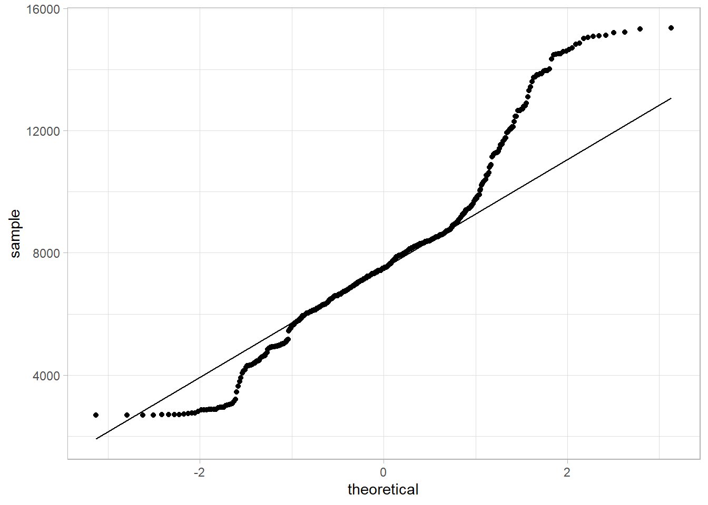
4.12 散布図・バブルチャート
散布図とバブルチャートはgeom_point()関数で作成します。バブルチャートの上にgeom_smooth()関数で近似曲線を重ねることができます。
- X軸：連続型変数
- Y軸：連続型変数
まず、プロット用のデータを作成します。
data_mpg_point <- mpg %>%
dplyr::group_by(manufacturer) %>%
dplyr::summarise(across(c(displ, cty, hwy), mean, na.rm = TRUE))
data_mpg_point## # A tibble: 15 x 4
## manufacturer displ cty hwy
## <chr> <dbl> <dbl> <dbl>
## 1 audi 2.54 17.6 26.4
## 2 chevrolet 5.06 15 21.9
## 3 dodge 4.38 13.1 17.9
## 4 ford 4.54 14 19.4
## 5 honda 1.71 24.4 32.6
## 6 hyundai 2.43 18.6 26.9
## 7 jeep 4.58 13.5 17.6
## 8 land rover 4.3 11.5 16.5
## 9 lincoln 5.4 11.3 17
## 10 mercury 4.4 13.2 18
## 11 nissan 3.27 18.1 24.6
## 12 pontiac 3.96 17 26.4
## 13 subaru 2.46 19.3 25.6
## 14 toyota 2.95 18.5 24.9
## 15 volkswagen 2.26 20.9 29.2散布図の基本形
ggplot(data = mpg,
mapping = aes(x = cty, y = hwy)) +
geom_point(alpha = 1.0, # 塗りつぶしの透明度
color = "darkblue", # 線の色
fill = "lightblue", # 塗りつぶしの色
shape = 21, # マーカーの種類
size = 2.0, # マーカーの大きさ
stroke = 0.5) # 線の太さ
バブルチャートの基本形
バブルチャートを作成するには、ggplot()関数のmapping = aes()関数でsize引数にバブルのサイズを変化させたい変数を指定します。
ggplot(data = data_mpg_point,
mapping = aes(x = cty, y = hwy, size = displ)) + # aes() 関数内のsize引数に連続型変数を指定
geom_point(alpha = 1.0, # 塗りつぶしの透明度
color = "darkblue", # 線の色
fill = "lightblue", # 塗りつぶしの色
shape = 21, # マーカーの種類
stroke = 0.5) # 線の太さ散布図に補助線を追加
水平線、垂直線、傾き・切片のある直線といった補助線を追加するには、それぞれgeom_hline()関数、geom_vline()関数、geom_abline()関数を使用します。
ggplot(data = mpg,
mapping = aes(x = cty, y = hwy)) +
geom_hline(yintercept = 20, # 水平線の縦軸との交点
color = "Tomato", # 水平線の色
size = 0.5) + # 水平線の太さ
geom_vline(xintercept = 20, # 垂直線の横軸との交点
color = "Forestgreen", # 垂直線の色
size = 0.5) + # 垂直線の太さ
geom_abline(intercept = 0, # 直線の切片
slope = 1, # 直線の傾き
color = "gold", # 直線の色
size = 0.5) + # 直線の太さ
geom_point(alpha = 1.0, # 塗りつぶしの透明度
color = "darkblue", # 線の色
fill = "lightblue", # 塗りつぶしの色
shape = 21, # マーカーの種類
size = 2.0, # マーカーの大きさ
stroke = 0.5) # 線の太さ散布図にコネクタ線を追加
散布図のマーカー間をつなぐコネクタ線を追加するには、geom_path()関数を追加します。折れ線グラフを作成するgeom_line()関数とは異なるので注意してください。
geom_path()関数とgeom_line()関数はどちらもマーカー間をつなぐコネクタ線を追加する関数ですが、geom_path()関数はデータセット上の順番で線を引く一方、geom_line()関数はデータセット上の順番に関わらずX軸上の順番で線を引くという違いがあります。
economics %>%
dplyr::filter(date >= "2000-01-01") %>%
ggplot(mapping = aes(x = unemploy, y = uempmed)) +
geom_path(alpha = 1.0, # 塗りつぶしの透明度
color = "darkblue", # 線の色
size = 0.5) + # 線の大きさ
geom_point(alpha = 1.0, # 塗りつぶしの透明度
color = "darkblue", # 線の色
fill = "lightblue", # 塗りつぶしの色
shape = 21, # マーカーの種類
size = 2.0, # マーカーの大きさ
stroke = 0.5) # 線の太さ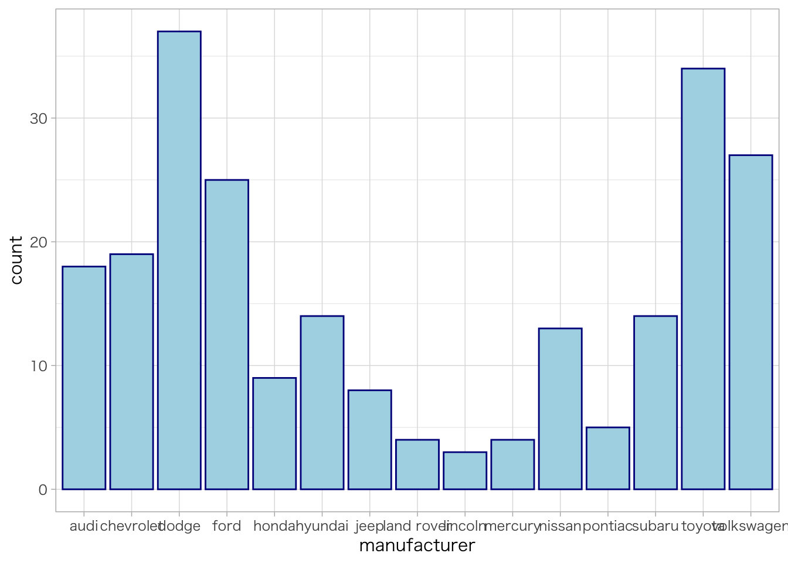
散布図に近似曲線を追加
散布図に近似曲線を追加するには、geom_smooth()関数を使用します。
ggplot(data = mpg,
mapping = aes(x = cty, y = hwy)) +
geom_point(alpha = 1.0, # 塗りつぶしの透明度
color = "darkblue", # 線の色
fill = "lightblue", # 塗りつぶしの色
shape = 21, # マーカーの種類
size = 2.0, # マーカーの大きさ
stroke = 0.5) + # 線の太さ
geom_smooth(formula = y ~ x, # 近似曲線の推計式
method = "loess", # 近似手法 (lm, glm, gam, loess)
alpha = 0.5, # 誤差範囲の透明度
color = "black", # 近似曲線の色
fill = "gray", # 誤差範囲の色
linetype = "dashed", # 近似曲線の種類（solid / dashed / dotted / dotdash / twodash / longdash）
size = 1.0) # 近似曲線の太さ
散布図にラベルを追加
散布図にラベルを追加するには、ggrepelパッケージのgeom_text_repel()関数を使用します。geom_text_repel()関数は、散布図のマーカーとラベルが重ならないようにラベルの位置を自動で調整します。
ggplot(data = data_mpg_point,
mapping = aes(x = cty, y = hwy)) +
geom_point(alpha = 1.0, # 塗りつぶしの透明度
color = "darkblue", # 線の色
fill = "lightblue", # 塗りつぶしの色
shape = 21, # マーカーの種類
size = 2.0, # マーカーの大きさ
stroke = 0.5) + # 線の太さ
geom_text_repel(mapping = aes(label = manufacturer),
seed = NA, # テキストの配置を決定するランダムシード
direction = "both", # テキストの整列方向 (both / x / y)
hjust = 0.0, # 横方向の整列位置 (0-1)
vjust = 0.5, # 縦方向の整列位置 (0-1)
nudge_x = NULL, # マーカーからの横方向のスペース (NULL, 0-)
nudge_y = NULL, # マーカーからの縦方向のスペース (NULL, 0-)
box.padding = 0.5, # テキスト周囲のスペース (0-)
point.padding = 0.1, # マーカー周囲のスペース (0-)
segment.alpha = 1.0, # 引き出し線の透明度
segment.color = "grey", # 引き出し線の色
segment.size = 0.5, # 引き出し線の太さ
min.segment.length = 0, # 引き出し線の最低長
color = "black", # テキストの色
family = "YUGO", # テキストのフォント
fontface = "plain", # テキストの書体 (plain / bold / italic / bold.italic)
size = 4.0) # テキストのサイズ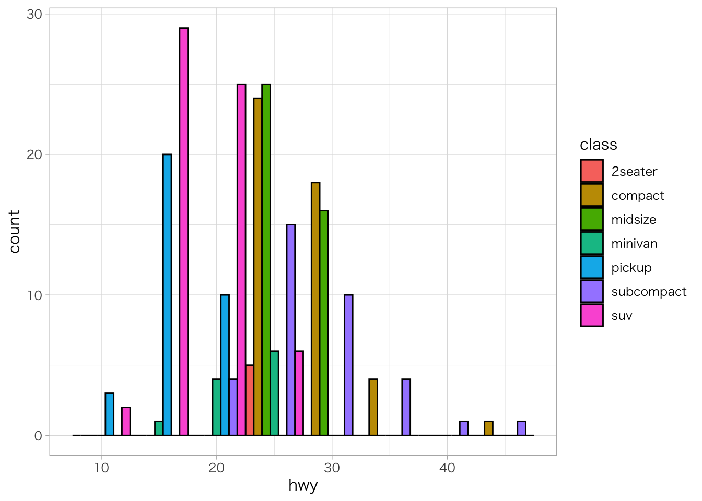
4.12.1 バブルチャートにラベルを追加
ggplot(data = data_mpg_point,
mapping = aes(x = cty, y = hwy, size = displ)) + # aes() 関数内のsize引数に連続型変数を指定
geom_point(alpha = 1.0, # 塗りつぶしの透明度
color = "darkblue", # 線の色
fill = "lightblue", # 塗りつぶしの色
shape = 21, # マーカーの種類
stroke = 0.5) + # 線の太さ
geom_text_repel(mapping = aes(label = manufacturer),
seed = NA, # テキストの配置を決定するランダムシード
direction = "both", # テキストの整列方向 (both / x / y)
hjust = 0.0, # 横方向の整列位置 (0-1)
vjust = 0.5, # 縦方向の整列位置 (0-1)
nudge_x = NULL, # マーカーからの横方向のスペース (NULL, 0-)
nudge_y = NULL, # マーカーからの縦方向のスペース (NULL, 0-)
box.padding = 1.0, # テキスト周囲のスペース (0-)
point.padding = 0.1, # マーカー周囲のスペース (0-)
segment.alpha = 1.0, # 引き出し線の透明度
segment.color = "grey", # 引き出し線の色
segment.size = 0.5, # 引き出し線の太さ
min.segment.length = 0, # 引き出し線の最低長
color = "black", # テキストの色
family = "YUGO", # テキストのフォント
fontface = "plain", # テキストの書体 (plain / bold / italic / bold.italic)
size = 4.0) + # テキストのサイズ
scale_size_area(max_size = 15) # 変量とマーカーの面積を比例させる
4.13 棒グラフ
棒グラフはgeom_col()関数で作成します。
- X軸：離散型変数
- Y軸：連続型変数
まず、プロット用のデータを作成します。
data_mpg_col <- mpg %>%
dplyr::group_by(manufacturer) %>%
dplyr::summarise(across(c(cty, hwy), mean, na.rm = TRUE))
data_mpg_col## # A tibble: 15 x 3
## manufacturer cty hwy
## <chr> <dbl> <dbl>
## 1 audi 17.6 26.4
## 2 chevrolet 15 21.9
## 3 dodge 13.1 17.9
## 4 ford 14 19.4
## 5 honda 24.4 32.6
## 6 hyundai 18.6 26.9
## 7 jeep 13.5 17.6
## 8 land rover 11.5 16.5
## 9 lincoln 11.3 17
## 10 mercury 13.2 18
## 11 nissan 18.1 24.6
## 12 pontiac 17 26.4
## 13 subaru 19.3 25.6
## 14 toyota 18.5 24.9
## 15 volkswagen 20.9 29.2data_owid_col <- data_owid %>%
dplyr::select(location, date, new_cases) %>%
dplyr::filter(location %in% c("Japan", "United Kingdom", "Germany", "France", "Italy")) %>%
dplyr::mutate(year = str_c(lubridate::year(date), "年"), .after = "date") %>%
dplyr::group_by(location, year) %>%
dplyr::summarise(across(new_cases, sum, na.rm = TRUE))
data_owid_col## # A tibble: 15 x 3
## # Groups: location [5]
## location year new_cases
## <chr> <chr> <dbl>
## 1 France 2020年 2735590
## 2 France 2021年 7706191
## 3 France 2022年 19425239
## 4 Germany 2020年 1719737
## 5 Germany 2021年 5430685
## 6 Germany 2022年 18895162
## 7 Italy 2020年 2107314
## 8 Italy 2021年 4018517
## 9 Italy 2022年 11121869
## 10 Japan 2020年 235747
## 11 Japan 2021年 1496547
## 12 Japan 2022年 6882091
## 13 United Kingdom 2020年 2491790
## 14 United Kingdom 2021年 10480124
## 15 United Kingdom 2022年 8502107縦棒グラフの基本形
ggplot(data = data_mpg_col,
mapping = aes(x = manufacturer, y = cty)) +
geom_col(alpha = 1.0, # 塗りつぶしの透明度
color = "darkblue", # 線の色
fill = "lightblue", # 塗りつぶしの色
size = 0.5, # 線の太さ
width = 0.9) + # 棒の幅 (0-1)
theme(axis.text.x = element_text(angle = 45, hjust = 1.0))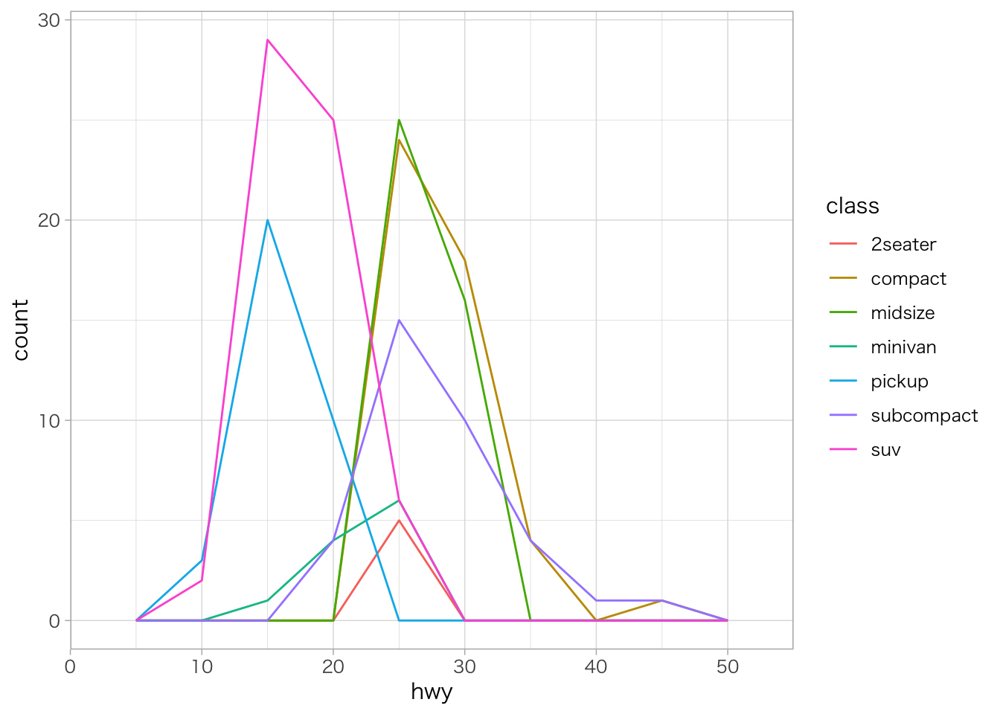
横棒グラフ
横棒グラフを作成するには、縦棒グラフを作成した後にcoord_flip()関数で横棒グラフに転換します。そのため、X軸とY軸の変数指定は縦棒グラフの場合と同じです。
ggplot(data = data_mpg_col,
mapping = aes(x = manufacturer, y = cty)) +
geom_col(alpha = 1.0, # 塗りつぶしの透明度
color = "darkblue", # 線の色
fill = "lightblue", # 塗りつぶしの色
size = 0.5, # 線の太さ
width = 0.9) + # 棒の幅 (0-1)
coord_flip()
縦棒グラフの順序並べ替え
縦棒グラフのX軸の順番を並べ替えるには、X軸の変数を指定する際にfct_reorder()関数を使用します。
ggplot(data = data_mpg_col,
mapping = aes(x = fct_reorder(manufacturer, -cty), y = cty)) +
geom_col(alpha = 1.0, # 塗りつぶしの透明度
color = "darkblue", # 線の色
fill = "lightblue", # 塗りつぶしの色
size = 0.5, # 線の太さ
width = 0.9) + # 棒の幅 (0-1)
theme(axis.text.x = element_text(angle = 45, hjust = 1.0))
縦棒グラフにラベルを追加
縦棒グラフにデータラベルを追加するには、geom_text()関数を使用します。
ggplot(data = data_mpg_col,
mapping = aes(x = fct_reorder(manufacturer, -cty), y = cty)) +
geom_col(alpha = 1.0, # 塗りつぶしの透明度
color = "darkblue", # 線の色
fill = "lightblue", # 塗りつぶしの色
size = 0.5, # 線の太さ
width = 0.9) + # 棒の幅 (0-1)
geom_text(mapping = aes(label = cty %>% sprintf(fmt = "%0.1f")), # sprintf() 関数で数値の表示形式を指定
vjust = -1, # 縦方向の整列位置 (0-1)
color = "black", # テキストの色
family = "YUGO", # テキストのフォント
fontface = "plain", # テキストの書体 (plain / bold / italic / bold.italic)
size = 4.0) + # テキストのサイズ
theme(axis.text.x = element_text(angle = 45, hjust = 1.0))
集合縦棒グラフ
複数の縦棒グラフを横並び形式で作成するには、position引数にposition_dodge()関数を指定します。
ggplot(data = data_owid_col,
mapping = aes(x = location, y = new_cases, fill = year, group = rev(year))) +
geom_col(position = position_dodge(width = 0.5), # 横並びポジション
alpha = 1.0, # 塗りつぶしの透明度
size = 0.5, # 線の太さ
width = 0.9) # 棒の幅 (0-1)
積み上げ縦棒グラフ
複数の縦棒グラフを積み上げ形式で作成するには、position引数にposition_stack()関数を指定します。
ggplot(data = data_owid_col,
mapping = aes(x = location, y = new_cases, fill = year, group = rev(year))) +
geom_col(position = position_stack(), # 積み上げポジション
alpha = 1.0, # 塗りつぶしの透明度
size = 0.5, # 線の太さ
width = 0.9) + # 棒の幅 (0-1)
guides(fill = guide_legend(reverse = TRUE))
積み上げ縦棒グラフにラベルを追加
ggplot(data = data_owid_col,
mapping = aes(x = location, y = new_cases, fill = year, group = rev(year))) +
geom_col(position = position_stack(), # 積み上げポジション
alpha = 1.0, # 塗りつぶしの透明度
size = 0.5, # 線の太さ
width = 0.9) + # 棒の幅 (0-1)
geom_text(mapping = aes(label = new_cases %>% sprintf(fmt = "%0.1f")), # sprintf() 関数で数値の表示形式を指定
position = position_stack(vjust = 0.5), # position_stack() 関数で積み上げ棒グラフ上のラベル位置を指定
color = "white", # テキストの色
family = "YUGO", # テキストのフォント
fontface = "plain", # テキストの書体 (plain / bold / italic / bold.italic)
size = 4.0) + # テキストのサイズ
guides(fill = guide_legend(reverse = TRUE))
100％積み上げ縦棒グラフ
複数の縦棒グラフを合計が100％になる積み上げ形式で作成するには、position引数にposition_fill()関数を指定します。
ggplot(data = data_owid_col,
mapping = aes(x = location, y = new_cases, fill = year, group = rev(year))) +
geom_col(position = position_fill(), # 割合積み上げポジション
alpha = 1.0, # 塗りつぶしの透明度
size = 0.5, # 線の太さ
width = 0.9) + # 棒の幅 (0-1)
guides(fill = guide_legend(reverse = TRUE))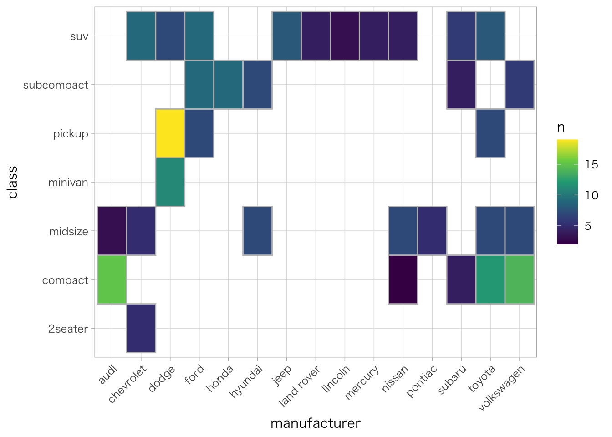
100％積み上げ縦棒グラフにラベルを追加
data_owid_col %>%
dplyr::group_by(location) %>%
dplyr::mutate(percent = new_cases / sum(new_cases)) %>%
ggplot(mapping = aes(x = location, y = new_cases, fill = year, group = rev(year))) +
geom_col(position = position_fill(), # 割合ポジション
alpha = 1.0, # 塗りつぶしの透明度
size = 0.5, # 線の太さ
width = 0.9) + # 棒の幅 (0-1)
geom_text(mapping = aes(label = percent %>% sprintf(fmt = "%0.2f")), # sprintf() 関数で数値の表示形式を指定
position = position_fill(vjust = 0.5), # position_fill() 関数で割合棒グラフ上のラベル位置を指定
color = "white", # テキストの色
family = "YUGO", # テキストのフォント
fontface = "plain", # テキストの書体 (plain / bold / italic / bold.italic)
size = 4.0) + # テキストのサイズ
guides(fill = guide_legend(reverse = TRUE))
4.14 円グラフ
円グラフを作成するには、geom_col()関数で積み上げ棒グラフを作成した後にcoord_polar()関数で円グラフに転換します。
- X軸：単一の値
- Y軸：連続型変数
まず、プロット用のデータを作成します。
data_mpg_circle <- mpg %>%
dplyr::group_by(class) %>%
dplyr::summarise(across(c(hwy), mean, na.rm = TRUE))
data_mpg_circle## # A tibble: 7 x 2
## class hwy
## <chr> <dbl>
## 1 2seater 24.8
## 2 compact 28.3
## 3 midsize 27.3
## 4 minivan 22.4
## 5 pickup 16.9
## 6 subcompact 28.1
## 7 suv 18.1円グラフの基本形
ggplot(data = data_mpg_circle,
mapping = aes(x = 1, y = hwy, fill = class, group = rev(class))) +
geom_col(position = position_stack(), # 積み上げポジション
alpha = 1.0, # 塗りつぶしの透明度
color = "grey", # 線の色
size = 0.5) + # 線の太さ
geom_text(mapping = aes(label = hwy %>% sprintf(fmt = "%0.1f")), # sprintf() 関数で数値の表示形式を指定
position = position_stack(vjust = 0.5), # position_stack() 関数で積み上げ棒グラフ上のラベル位置を指定
color = "white", # テキストの色
family = "YUGO", # テキストのフォント
fontface = "plain", # テキストの書体 (plain / bold / italic / bold.italic)
size = 4.0) + # テキストのサイズ
coord_polar(theta = "y", # 円グラフを作成する軸
start = 0, # 円グラフの開始位置（ラジアン）
direction = 1) + # 円グラフの方向（1：時計回り、-1：反時計回り）
theme(panel.grid = element_blank(), # パネルの軸や目盛り線を表示しない
axis.title = element_blank(),
axis.text = element_blank(),
axis.ticks = element_blank()) +
guides(fill = guide_legend(reverse = FALSE))
4.15 折れ線グラフ
折れ線グラフは時系列的に変化するデータを可視化する最も基本的なグラフで、geom_line()関数で作成します。
- X軸：日付型変数
- Y軸：連続型変数
まず、プロット用のデータを作成します。
data_owid_line <- data_owid %>%
dplyr::select(location, date, new_cases_smoothed) %>%
dplyr::filter(location %in% c("Japan", "United Kingdom", "Germany", "France", "Italy"),
date >= "2022-01-01") %>%
tidyr::drop_na(everything())
data_owid_line## # A tibble: 706 x 3
## location date new_cases_smoothed
## <chr> <date> <dbl>
## 1 France 2022-01-01 157705.
## 2 France 2022-01-02 162095.
## 3 France 2022-01-03 167381.
## 4 France 2022-01-04 180515.
## 5 France 2022-01-05 198252.
## 6 France 2022-01-06 206286.
## 7 France 2022-01-07 220003.
## 8 France 2022-01-08 232080.
## 9 France 2022-01-09 266032.
## 10 France 2022-01-10 269809.
## # ... with 696 more rows折れ線グラフの基本形
ggplot(data = economics,
mapping = aes(x = date, y = unemploy)) +
geom_line(alpha = 1.0, # 線の透明度
color = "darkblue", # 線の色
linetype = "solid", # 線の種類（solid / dashed / dotted / dotdash / twodash / longdash）
size = 1.0) # 線の太さ
折れ線グラフにマーカーを追加
折れ線グラフを作成するgeom_line()関数と、散布図を作成するgeom_point()関数を併用します。
ggplot(data = economics,
mapping = aes(x = date, y = unemploy)) +
geom_line(alpha = 1.0, # 線の透明度
color = "darkblue", # 線の色
linetype = "solid", # 線の種類（solid / dashed / dotted / dotdash / twodash / longdash）
size = 1.0) + # 線の太さ
geom_point(alpha = 1.0, # 塗りつぶしの透明度
color = "darkblue", # 線の色
fill = "lightblue", # 塗りつぶしの色
shape = 21, # マーカーの種類
size = 2.0, # マーカーの大きさ
stroke = 0.5) # 線の太さ
折れ線グラフに系列ラベルを追加
折れ線グラフの数が多く凡例が分かりにくい場合などに、折れ線グラフの右側に系列名のラベルを追加します。ラベルを追加するには、ggrepelパッケージのgeom_text_repel関数を使用します。
ggplot(data = data_owid_line,
mapping = aes(x = date, y = new_cases_smoothed, color = location)) +
geom_line(alpha = 1.0, # 線の透明度
linetype = "solid", # 線の種類（solid / dashed / dotted / dotdash / twodash / longdash）
size = 1.0) + # 線の太さ
geom_text_repel(data = data_owid_line %>%
dplyr::group_by(location) %>%
dplyr::filter(date == max(date)),
mapping = aes(x = date, y = new_cases_smoothed, label = location),
seed = NA, # テキストの配置を決定するランダムシード
direction = "y", # テキストの整列方向 (both / x / y)
hjust = 0.0, # 横方向の整列位置 (0-1)
vjust = 0.5, # 縦方向の整列位置 (0-1)
nudge_x = 5, # マーカーからの横方向のスペース (NULL, 0-)
nudge_y = NULL, # マーカーからの縦方向のスペース (NULL, 0-)
box.padding = 0.1, # テキスト周囲のスペース (0-)
point.padding = 0.1, # マーカー周囲のスペース (0-)
segment.alpha = 1.0, # 引き出し線の透明度
segment.color = "grey", # 引き出し線の色
segment.size = 0.5, # 引き出し線の太さ
min.segment.length = Inf, # 引き出し線の最低長
family = "YUGO", # テキストのフォント
fontface = "plain", # テキストの書体 (plain / bold / italic / bold.italic)
size = 3.0) + # テキストのサイズ
scale_x_date(date_breaks = "1 month", # 日付目盛の周期
date_labels = "%y/%b", # %Y：4桁年、%y：2桁年、%m：2桁月、%b：1桁月、%d：日
limits = c(as.Date("2022/01/01"), NA), # 始期・終期（指定しない場合はNA）
expand = expansion(mult = c(0.00, 0.2), add = c(0, 0))) + # 始期・終期からの余白（multは余白率、addは余白幅）
theme(legend.position = "none")
4.16 ステップグラフ
ステップグラフは折れ線グラフの特殊形です。政策金利のように、段階的に値が変化するデータに適しています。ステップグラフはgeom_step()関数で作成します。
- X軸：日付型変数
- Y軸：連続型変数
まず、サンプルデータを作成します。ここでは、Our World in Dataが提供する新型コロナウイルス感染対策の厳格度を示すStringency Indexを用います。
data_owid_step <- data_owid %>%
dplyr::select(location, date, stringency_index) %>%
dplyr::filter(location %in% c("Japan", "United Kingdom", "Germany", "France", "Italy"))
data_owid_step## # A tibble: 4,235 x 3
## location date stringency_index
## <chr> <date> <dbl>
## 1 France 2020-01-24 5.56
## 2 France 2020-01-25 5.56
## 3 France 2020-01-26 5.56
## 4 France 2020-01-27 5.56
## 5 France 2020-01-28 5.56
## 6 France 2020-01-29 5.56
## 7 France 2020-01-30 5.56
## 8 France 2020-01-31 5.56
## 9 France 2020-02-01 5.56
## 10 France 2020-02-02 5.56
## # ... with 4,225 more rows
4.17 面グラフ
面グラフは折れ線グラフの特殊形です。面グラフには2種類あり、折れ線グラフとX軸で挟まれた範囲を塗りつぶすグラフはgeom_area()関数、2つの折れ線グラフで挟まれた範囲を塗りつぶすグラフはgeom_ribbon()関数で作成します。後者は特にリボングラフと呼ばれ、信頼区間の可視化に用いることができます。
- X軸：日付型変数
- Y軸：連続型変数
まず、プロット用のデータを作成します。
data_owid_line <- data_owid %>%
dplyr::select(location, date, new_cases_smoothed) %>%
dplyr::filter(location %in% c("Japan", "United Kingdom", "Germany", "France", "Italy"),
date >= "2022-01-01") %>%
tidyr::drop_na(everything())
data_owid_line## # A tibble: 706 x 3
## location date new_cases_smoothed
## <chr> <date> <dbl>
## 1 France 2022-01-01 157705.
## 2 France 2022-01-02 162095.
## 3 France 2022-01-03 167381.
## 4 France 2022-01-04 180515.
## 5 France 2022-01-05 198252.
## 6 France 2022-01-06 206286.
## 7 France 2022-01-07 220003.
## 8 France 2022-01-08 232080.
## 9 France 2022-01-09 266032.
## 10 France 2022-01-10 269809.
## # ... with 696 more rows面グラフの基本形
ggplot(data = economics,
mapping = aes(x = date, y = unemploy)) +
geom_area(alpha = 1.0, # 線の透明度
color = "darkblue", # 線の色
fill = "lightblue", # 塗りつぶしの色
linetype = "solid", # 線の種類（solid / dashed / dotted / dotdash / twodash / longdash）
size = 1.0) # 線の太さ
積み上げ面グラフ
複数の面グラフを積み上げ形式で作成するには、position引数にposition_stack()関数を指定します。
data_owid_line %>%
dplyr::mutate(location = factor(location,
levels = c("Japan", "United Kingdom", "Germany", "France", "Italy") %>% rev())) %>%
ggplot(mapping = aes(x = date, y = new_cases_smoothed, fill = location)) +
geom_area(position = position_stack(),
alpha = 1.0, # 線の透明度
linetype = "solid", # 線の種類（solid / dashed / dotted / dotdash / twodash / longdash）
size = 1.0) # 線の太さ
リボングラフの基本形
リボングラフでは、aes()関数の中で塗りつぶし範囲の下端をymin引数、上端をymax引数に指定します。
data_owid_line %>%
dplyr::group_by(date) %>%
dplyr::summarise(new_cases_max = max(new_cases_smoothed, na.rm = TRUE),
new_cases_min = min(new_cases_smoothed, na.rm = TRUE)) %>%
ggplot(mapping = aes(x = date, ymin = new_cases_min, ymax = new_cases_max)) +
geom_ribbon(alpha = 1.0, # 線の透明度
color = "darkblue", # 線の色
fill = "lightblue", # 塗りつぶしの色
linetype = "solid", # 線の種類（solid / dashed / dotted / dotdash / twodash / longdash）
size = 0.5) # 線の太さ
リボングラフに折れ線グラフを追加
リボングラフに折れ線グラフを追加する際は、まずgeom_ribbon()関数でリボングラフを作成し、そのあとに+でgeom_line()関数をつなげて折れ線グラフを追加します。
data_owid_line %>%
dplyr::group_by(date) %>%
dplyr::summarise(new_cases_max = max(new_cases_smoothed, na.rm = TRUE),
new_cases_median = median(new_cases_smoothed, na.rm = TRUE),
new_cases_min = min(new_cases_smoothed, na.rm = TRUE)) %>%
ggplot(mapping = aes(x = date, ymin = new_cases_min, ymax = new_cases_max, y = new_cases_median)) +
geom_ribbon(alpha = 1.0, # 線の透明度
color = "darkblue", # 線の色
fill = "lightblue", # 塗りつぶしの色
linetype = "solid", # 線の種類（solid / dashed / dotted / dotdash / twodash / longdash）
size = 0.5) + # 線の太さ
geom_line(alpha = 1.0, # 線の透明度
color = "red", # 線の色
linetype = "dashed", # 線の種類（solid / dashed / dotted / dotdash / twodash / longdash）
size = 1.0) # 線の太さ
4.18 箱ひげ図・ヴァイオリングラフ
データの分布範囲を可視化するには箱ひげ図やヴァイオリングラフを用います。箱ひげ図はgeom_boxplot()関数、ヴァイオリングラフはgeom_violin()関数で作成します。geom_jitter()関数を併用し、箱ひげ図やヴァイオリングラフに個別データの位置をプロットすると、データの分布がより具体的に分かりやすくなります。
- X軸：離散型変数
- Y軸：連続型変数
箱ひげ図の基本形
箱ひげ図は一般的に、ひげの下端が最小値、箱の下端が第1四分位数、箱内部の横線が中央値、箱の上端が第3四分位数、ひげの上端が最大値を表します。しかし、ggplot2パッケージのgeom_boxplot()で作成すると、ひげの下端・上端は箱の下端・上端から1.5×IQRの範囲内にある最小・最大のサンプルの位置を表すことに注意が必要です。その範囲外にあるサンプルは外れ値として扱われます。なお、IQRは四分位範囲（第3四分位数-第1四分位数）を意味します。
ggplot(data = mpg,
mapping = aes(x = class, y = hwy)) +
geom_boxplot(outlier.alpha = 1.0, # 外れ値マーカーの塗りつぶしの透明度
outlier.color = "darkblue", # 外れ値マーカーの線の色
outlier.fill = "lightblue", # 外れ値マーカーの塗りつぶしの色
outlier.shape = 21, # 外れ値マーカーの種類（外れ値を表示しない場合はNA）
outlier.size = 2.0, # 外れ値マーカーの大きさ
outlier.stroke = 0.5, # 外れ値マーカーの線の太さ
alpha = 0.5, # 箱の塗りつぶしの透明度
color = "darkblue", # 箱ひげの線の色
fill = "lightblue", # 箱の塗りつぶしの色
size = 0.5) # 箱ひげの線の太さ
箱ひげ図に個別サンプルを追加
箱ひげ図に個別サンプルを追加する場合は、データの重複表示を避けるため、geom_boxplot()関数のoutlier.shape引数にNAを指定して、箱ひげ図による外れ値のマーカーを非表示にします。
ggplot(data = mpg,
mapping = aes(x = class, y = hwy)) +
geom_boxplot(outlier.shape = NA, # 外れ値マーカーの種類（外れ値を表示しない場合はNA）
alpha = 0.5, # 箱の塗りつぶしの透明度
color = "darkblue", # 箱ひげの線の色
fill = "lightblue", # 箱の塗りつぶしの色
size = 0.5) + # 箱ひげの線の太さ
geom_jitter(height = 0.3, # マーカーの縦方向の分布範囲
width = 0.3, # マーカーの横方向の分布範囲
alpha = 1.0, # マーカーの塗りつぶしの透明度
color = "darkblue", # マーカーの線の色
fill = "darkblue", # マーカーの塗りつぶしの色
shape = 21, # マーカーの種類
size = 1.0, # マーカーの大きさ
stroke = 0.5) # マーカーの線の太さ
ヴァイオリングラフの基本形
ggplot(data = mpg,
mapping = aes(x = class, y = hwy)) +
geom_violin(scale = "area", # ヴァイオリンの大きさ（area：すべての面積が同じ、count：サンプル個数に比例、width：すべての幅が同じ）
alpha = 0.5, # ヴァイオリンの塗りつぶしの透明度
color = "darkblue", # ヴァイオリンの線の色
fill = "lightblue", # ヴァイオリンの塗りつぶしの色
linetype = "solid", # ヴァイオリンの線の種類
size = 0.5) # ヴァイオリンの線の太さ
ヴァイオリングラフに個別サンプルを追加
ggplot(data = mpg,
mapping = aes(x = class, y = hwy)) +
geom_violin(scale = "area", # ヴァイオリンの大きさ（area：すべての面積が同じ、count：サンプル個数に比例、width：すべての幅が同じ）
alpha = 0.5, # ヴァイオリンの塗りつぶしの透明度
color = "darkblue", # ヴァイオリンの線の色
fill = "lightblue", # ヴァイオリンの塗りつぶしの色
linetype = "solid", # ヴァイオリンの線の種類
size = 0.5) + # ヴァイオリンの線の太さ
geom_jitter(height = 0.4, # マーカーの縦方向の分布範囲
width = 0.4, # マーカーの横方向の分布範囲
alpha = 1.0, # マーカーの塗りつぶしの透明度
color = "darkblue", # マーカーの線の色
fill = "darkblue", # マーカーの塗りつぶしの色
shape = 21, # マーカーの種類
size = 1.0, # マーカーの大きさ
stroke = 0.5) # マーカーの線の太さ

4.20 色の設定
変数の値や属性に応じて色を自動で変化させるには、geom関数ファミリーでグラフを作成したあとに、+でscale_color関数ファミリー（線の色）やscale_fill関数ファミリー（塗りつぶしの色）をつなぎます。色を変化に対応する変数が離散型か連続型かによって、どのscale_color/fill関数を用いるかが変わります。
まず、プロット用のデータを作成します。
data_mpg_color <- mpg %>%
dplyr::group_by(class) %>%
dplyr::summarise(across(c(cty, hwy), mean, na.rm = TRUE))
data_mpg_color## # A tibble: 7 x 3
## class cty hwy
## <chr> <dbl> <dbl>
## 1 2seater 15.4 24.8
## 2 compact 20.1 28.3
## 3 midsize 18.8 27.3
## 4 minivan 15.8 22.4
## 5 pickup 13 16.9
## 6 subcompact 20.4 28.1
## 7 suv 13.5 18.1色の手動指定（離散型変数）
自分で色の割り当てを決める方法です。Rで使用できる色の種類については、こちらを参照してください。
ggplot(data = mpg,
mapping = aes(x = fl, color = fl, fill = fl)) +
geom_bar() +
scale_color_manual(values = c("Red", "Salmon", "Gold", "Forestgreen", "Darkblue")) + # colorで指定した変数の離散値と同数の色を指定
scale_fill_manual(values = c("Red", "Salmon", "Gold", "Forestgreen", "Darkblue")) # fillで指定した変数の離散値と同数の色を指定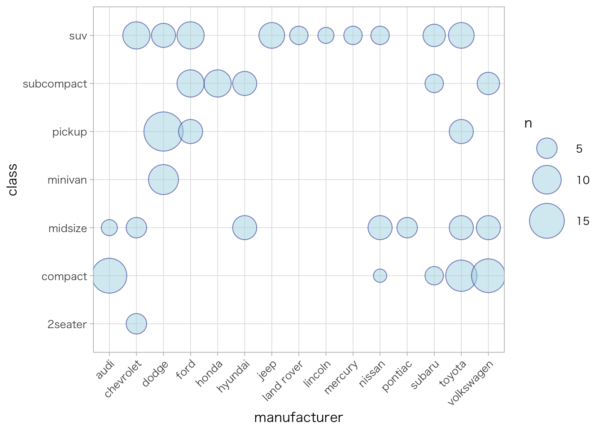
Brewerカラーパレット（離散型変数）
RColorBrewerパッケージで提供される様々な種類の美麗なプリセットカラーパレットが利用できます。
# カラーパレットの確認
RColorBrewer::display.brewer.all()
ggplot(data = mpg,
mapping = aes(x = fl, color = fl, fill = fl)) +
geom_bar() +
scale_color_brewer(palette = "Paired", # カラーパレット名
direction = 1) + # 色の順序（-1で逆順）
scale_fill_brewer(palette = "Paired", # カラーパレット名
direction = 1) # 色の順序（-1で逆順）
Viridisカラーパレット（離散型変数）
色覚障害に対応したカラーパレットです。パレットの種類などの詳細はこちらを参照してください。
ggplot(data = mpg,
mapping = aes(x = fl, color = fl, fill = fl)) +
geom_bar() +
scale_color_viridis_d(option = "viridis", # パレットの種類（magma / inferno / plasma / viridis / cividis）
direction = 1) + # 色の順序（-1で逆順）
scale_fill_viridis_d(option = "viridis", # パレットの種類（magma / inferno / plasma / viridis / cividis）
direction = 1) # 色の順序（-1で逆順）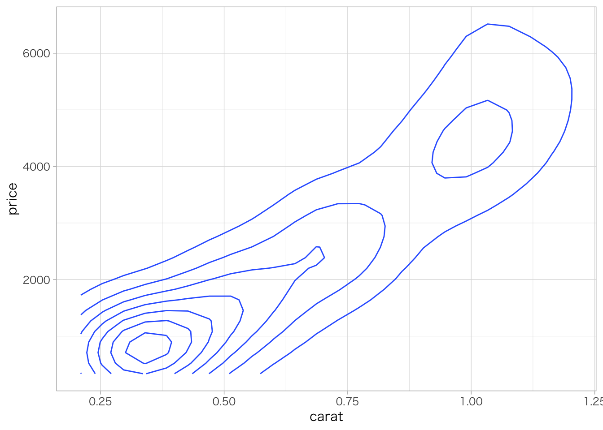
ggsciカラーパレット（離散型変数）
様々な科学ジャーナルで使用されるカラーパレットです。パレットの種類などの詳細はこちらをご覧ください。
ggplot(data = mpg,
mapping = aes(x = fl, color = fl, fill = fl)) +
geom_bar() +
scale_color_npg() +
scale_fill_npg()
distillerカラーパレット（連続型変数）
RColorBrewerパッケージで提供される様々な種類の美麗なプリセットカラーパレットが利用できます。
# カラーパレットの確認
RColorBrewer::display.brewer.all()
ggplot(data = mpg,
mapping = aes(x = hwy, fill = ..x..)) +
geom_dotplot() +
scale_fill_distiller(palette = "Blues", # カラーパレット名
direction = 1) # 色の順序（-1で逆順）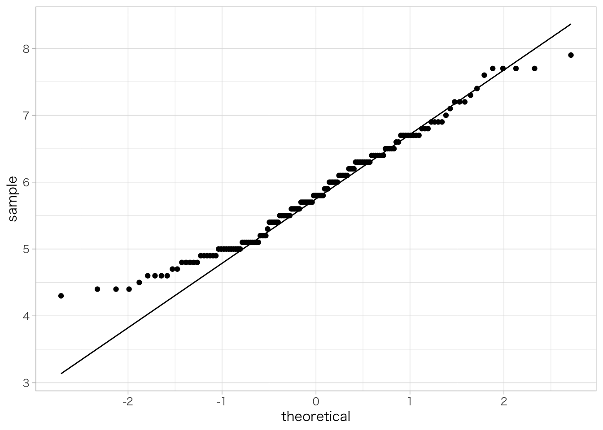
Viridisカラーパレット（連続型変数）
色覚障害に対応したカラーパレットです。パレットの種類などの詳細はこちらを参照してください。
ggplot(data = mpg,
mapping = aes(x = hwy, fill = ..x..)) +
geom_dotplot() +
scale_fill_viridis_c(option = "viridis", # パレットの種類（magma / inferno / plasma / viridis / cividis）
direction = 1) # 色の順序（-1で逆順）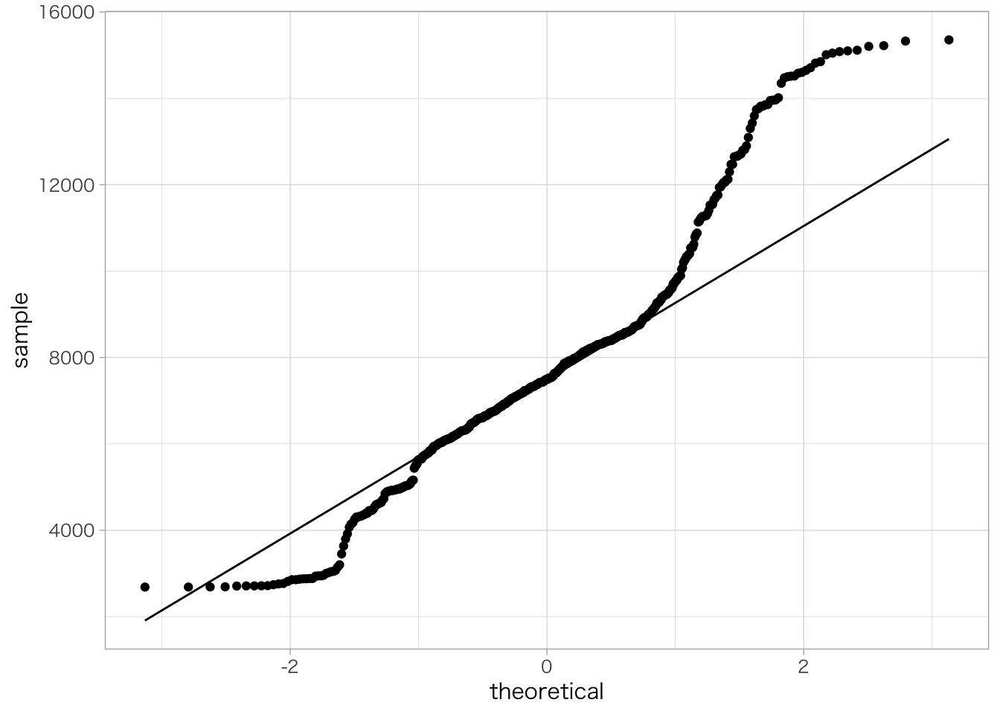
gradientカラーパレット（連続型変数）
自分で色を指定してグラデーションを作成するカラーパレットです。2色グラデーション、3色グラデーション、n色グラデーションの3種類の関数があります。n色グラデーションでは、事前にベースとなるカラーパレットをRColorBrewer::display.brewer.all()関数などで確認して使用します。
# 2色グラデーション
ggplot(data = mpg,
mapping = aes(x = hwy, fill = ..x..)) +
geom_dotplot() +
scale_fill_gradient(low = "Red", # 最小値の色
high = "Forestgreen") # 最大値の色
# 3色グラデーション
ggplot(data = mpg,
mapping = aes(x = hwy, fill = ..x..)) +
geom_dotplot() +
scale_fill_gradient2(low = "Red", # 最小値の色
mid = "Gold", # 中間値の色
high = "Forestgreen", # 最大値の色
midpoint = 30) # 中間値
# パレットを指定したn色グラデーション
ggplot(data = mpg,
mapping = aes(x = hwy, fill = ..x..)) +
geom_dotplot() +
scale_fill_gradientn(colors = brewer.pal(name = "RdYlGn",
n = 9))
4.21 軸の設定
X軸、Y軸の設定を行うには、scale_x/y関数ファミリーを使用します。X軸、Y軸に指定する変数の型によって、使用する関数が異なります。
まず、プロット用のデータを作成します。
data_owid_scale <- data_owid %>%
dplyr::group_by(location) %>%
dplyr::summarise(across(c(new_cases, new_deaths), mean, na.rm = TRUE))
summary(data_owid_scale)## location new_cases new_deaths
## Length:244 Min. : 0.0 Min. : 0.007
## Class :character 1st Qu.: 41.5 1st Qu.: 0.482
## Mode :character Median : 316.1 Median : 4.355
## Mean : 11553.6 Mean : 139.534
## 3rd Qu.: 2026.0 3rd Qu.: 24.695
## Max. :615279.4 Max. :7318.568
## NA's :15 NA's :21X軸：連続型、Y軸：連続型
ggplot(data = data_owid_scale,
mapping = aes(x = new_cases, y = new_deaths)) +
geom_point() +
geom_smooth() +
scale_x_continuous(breaks = breaks_x <- seq(0, 1e+06, 100000), # 目盛
labels = breaks_x, # 目盛ラベル
limits = c(0, 7e+05), # 下限・上限値（指定しない場合はNA）
expand = expansion(mult = c(0.05, 0.05), add = c(0, 0))) + # 下限・上限値からの余白（multは余白率、addは余白幅）
scale_y_continuous(breaks = breaks_y <- seq(0, 10000, 1000), # 目盛
labels = breaks_y, # 目盛ラベル
limits = c(0, 8000), # 下限・上限値（指定しない場合はNA）
expand = expansion(mult = c(0.05, 0.05), add = c(0, 0))) + # 下限・上限値からの余白（multは余白率、addは余白幅）
labs(x = "新規感染者数（1日当たり平均、人）", # X軸のタイトル
y = "新規死亡者数（1日当たり平均、人）") + # Y軸のタイトル
theme(axis.title = element_text(size = 8), # 軸タイトルの文字サイズ
axis.text.x = element_text(angle = 0, # X軸ラベルの角度
hjust = 0.5, # X軸ラベルの横整列位置（0-1）
vjust = 0.5), # X軸ラベルの縦整列位置（0-1）
axis.text.y = element_text(angle = 0, # Y軸ラベルの角度
hjust = 0.5, # Y軸ラベルの横整列位置（0-1）
vjust = 0.5)) # Y軸ラベルの縦整列位置（0-1）## `geom_smooth()` using method = 'loess' and formula 'y ~ x'
対数目盛
ggplot(data = data_owid_scale,
mapping = aes(x = new_cases, y = new_deaths)) +
geom_point() +
geom_smooth() +
scale_x_log10(breaks = breaks_x <- 10 ** seq(0, 6, 1), # 目盛
labels = c(breaks_x[1:4], "1万", "10万", "100万"), # 目盛ラベル
limits = c(1, 7e+05), # 下限・上限値（指定しない場合はNA）
expand = expansion(mult = c(0.05, 0.05), add = c(0, 0))) + # 下限・上限値からの余白（multは余白率、addは余白幅）
scale_y_log10(breaks = breaks_y <- 10 ** seq(0, 4, 1), # 目盛
labels = c(breaks_y[1:4], "1万"), # 目盛ラベル
limits = c(1, 8000), # 下限・上限値（指定しない場合はNA）
expand = expansion(mult = c(0.05, 0.05), add = c(0, 0))) + # 下限・上限値からの余白（multは余白率、addは余白幅）
labs(x = "新規感染者数（1日当たり平均、人）", # X軸のタイトル
y = "新規死亡者数（1日当たり平均、人）") + # Y軸のタイトル
theme(axis.title = element_text(size = 8), # 軸タイトルの文字サイズ
axis.text.x = element_text(angle = 0, # X軸ラベルの角度
hjust = 0.5, # X軸ラベルの横整列位置（0-1）
vjust = 0.5), # X軸ラベルの縦整列位置（0-1）
axis.text.y = element_text(angle = 0, # Y軸ラベルの角度
hjust = 0.5, # Y軸ラベルの横整列位置（0-1）
vjust = 0.5)) # Y軸ラベルの縦整列位置（0-1）## `geom_smooth()` using method = 'loess' and formula 'y ~ x'
X軸：日付型、Y軸：連続型
# date_breaks引数を使用する場合
ggplot(data = economics,
mapping = aes(x = date, y = unemploy)) +
geom_line() +
scale_x_date(date_breaks = "3 month", # 日付目盛の周期
date_labels = "%y/%b", # 日付フォーマット（%Y：4桁年、%y：2桁年、%m：2桁月、%b：1桁月、%d：日）
limits = c(as.Date("2000/01/01"), as.Date("2002/12/31")), # 始期・終期（指定しない場合はNA）
expand = expansion(mult = c(0.00, 0.00), add = c(0, 0))) + # 始期・終期からの余白（multは余白率、addは余白幅）
scale_y_continuous(breaks = breaks_y <- seq(0, 50000, 1000), # 目盛
labels = breaks_y, # 目盛ラベル
limits = c(5000, 10000), # 下限・上限値（指定しない場合はNA）
expand = expansion(mult = c(0.05, 0.05), add = c(0, 0))) + # 下限・上限値からの余白（multは余白率、addは余白幅）
labs(x = "日付（年/月）", # X軸のタイトル
y = "失業者数（千人）") + # Y軸のタイトル
theme(axis.title = element_text(size = 8), # 軸タイトルの文字サイズ
axis.text.x = element_text(angle = 0, # X軸ラベルの角度
hjust = 0.5, # X軸ラベルの横整列位置（0-1）
vjust = 0.5), # X軸ラベルの縦整列位置（0-1）
axis.text.y = element_text(angle = 0, # Y軸ラベルの角度
hjust = 0.5, # Y軸ラベルの横整列位置（0-1）
vjust = 0.5)) # Y軸ラベルの縦整列位置（0-1）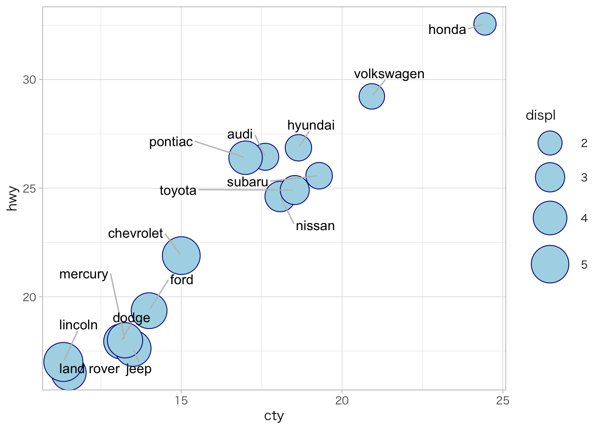
# date_breaks引数を使用しない場合（結果は同じ）
ggplot(data = economics,
mapping = aes(x = date, y = unemploy)) +
geom_line() +
scale_x_date(breaks = breaks_x <- seq(as.Date("1967-01-01"), max(economics$date), by = "3 months"), # 日付目盛ベクトル
date_labels = str_c(str_sub(lubridate::year(breaks_x), 3, 4), "/", lubridate::month(breaks_x)), # 日付目盛ベクトルをラベル用に加工
limits = c(as.Date("2000/01/01"), as.Date("2002/12/31")), # 始期・終期（指定しない場合はNA）
expand = expansion(mult = c(0.00, 0.00), add = c(0, 0))) + # 始期・終期からの余白（multは余白率、addは余白幅）
scale_y_continuous(breaks = breaks_y <- seq(0, 50000, 1000), # 目盛
labels = breaks_y, # 目盛ラベル
limits = c(5000, 10000), # 下限・上限値（指定しない場合はNA）
expand = expansion(mult = c(0.05, 0.05), add = c(0, 0))) + # 下限・上限値からの余白（multは余白率、addは余白幅）
labs(x = "日付（年/月）", # X軸のタイトル
y = "失業者数（千人）") + # Y軸のタイトル
theme(axis.title = element_text(size = 8), # 軸タイトルの文字サイズ
axis.text.x = element_text(angle = 0, # X軸ラベルの角度
hjust = 0.5, # X軸ラベルの横整列位置（0-1）
vjust = 0.5), # X軸ラベルの縦整列位置（0-1）
axis.text.y = element_text(angle = 0, # Y軸ラベルの角度
hjust = 0.5, # Y軸ラベルの横整列位置（0-1）
vjust = 0.5)) # Y軸ラベルの縦整列位置（0-1）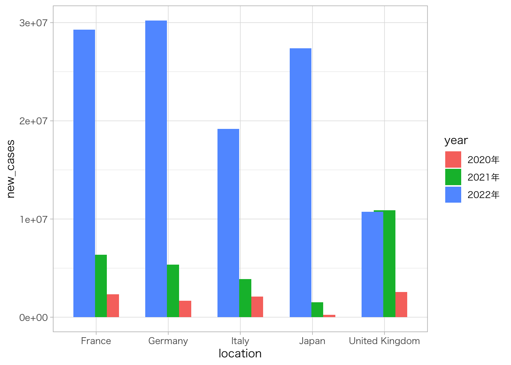
4.22 複数グラフ（ファセット）
複数のグラフをまとめたファセットを作成するには、facet関数ファミリーを使用します。どのようなファセットにするかで使用する関数が異なります。
行方向の複合グラフ
行方向に複合グラフを並べる場合は、facet_rep_grid()関数のrows引数にvars(離散型変数)の形でグラフを分けて作成したい変数名を指定します。
ggplot(data = mpg,
mapping = aes(x = cty, y = hwy)) +
geom_point() +
facet_rep_grid(rows = vars(class), # 変数class別にグラフを作成
scales = "fixed", # 目盛設定（fixed：全グラフ共通、free：全グラフ独立、free_x：X軸のみ独立、free_y：Y軸のみ独立）
repeat.tick.labels = FALSE) # 目盛表示（TRUE：すべてのグラフに表示、FALSE：端のグラフのみ表示列方向の複合グラフ
列方向に複合グラフを並べる場合は、facet_rep_grid()関数のcols引数にvars(離散型変数)の形でグラフを分けて作成したい変数名を指定します。
ggplot(data = mpg,
mapping = aes(x = cty, y = hwy)) +
geom_point() +
facet_rep_grid(cols = vars(class), # 変数class別にグラフを作成
scales = "fixed", # 目盛設定（fixed：全グラフ共通、free：全グラフ独立、free_x：X軸のみ独立、free_y：Y軸のみ独立）
repeat.tick.labels = FALSE) # 目盛表示（TRUE：すべてのグラフに表示、FALSE：端のグラフのみ表示
行・列方向の複合グラフ
行・列方向に複合グラフを並べる場合は、facet_rep_grid()関数のrows引数とcols引数にそれぞれvars(離散型変数)の形でグラフを分けて作成したい変数名を指定します。
ggplot(data = mpg,
mapping = aes(x = cty, y = hwy)) +
geom_point() +
facet_rep_grid(rows = vars(year), # 変数year別に行方向のグラフを作成
cols = vars(class), # 変数class別に列方向のグラフを作成
scales = "fixed", # 目盛設定（fixed：全グラフ共通、free：全グラフ独立、free_x：X軸のみ独立、free_y：Y軸のみ独立）
repeat.tick.labels = TRUE) # 目盛表示（TRUE：すべてのグラフに表示、FALSE：端のグラフのみ表示
行数・列数を指定した複合グラフ
行数と列数を指定してグラフを順番に並べるには、facet_rep_wrap()関数のfacets引数に~ 離散型変数の形でグラフを分けて作成したい変数名を指定し、nrow引数とncol引数に行数・列数を指定します。
ggplot(data = mpg,
mapping = aes(x = cty, y = hwy)) +
geom_point() +
facet_rep_wrap(facets = ~ manufacturer, # 変数manufacturer別にグラフを作成
nrow = 3, # 行方向のグラフ数
ncol = 5, # 列方向のグラフ数
scales = "fixed", # 目盛設定（fixed：全グラフ共通、free：全グラフ独立、free_x：X軸のみ独立、free_y：Y軸のみ独立）
repeat.tick.labels = TRUE) # 目盛表示（TRUE：すべてのグラフに表示、FALSE：端のグラフのみ表示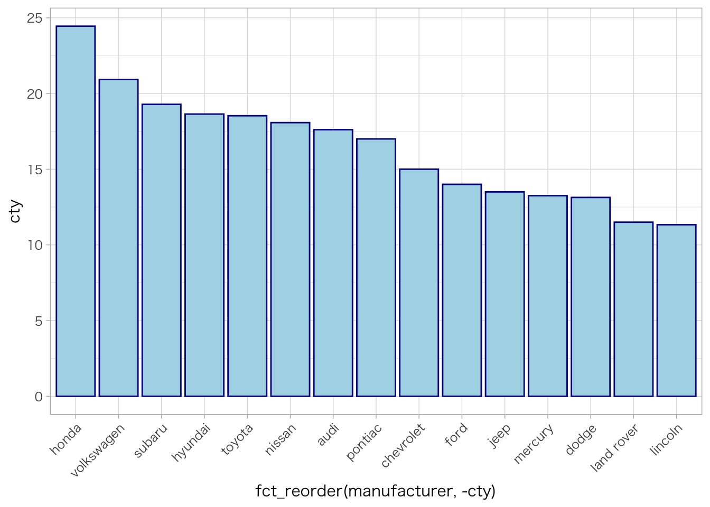
複合グラフの設定
ファセットの各種設定を行うには、theme()関数内に必要事項を記入します。
# 行数・列数を指定した複合グラフの例
ggplot(data = mpg,
mapping = aes(x = cty, y = hwy)) +
geom_point() +
facet_rep_wrap(facets = ~ manufacturer) + # 変数manufacturer別にグラフを作成
theme(strip.background = element_rect(color = NA, # ファセットタイトル領域の枠の色
fill = "White"), # ファセットタイトル領域の塗りつぶしの色（NAで無色）
strip.text = element_text(color = "Black", # ファセットタイトルの色
face = "bold", # ファセットタイトルの書体
size = 8, # ファセットタイトルのフォントサイズ
hjust = 0.5, # ファセットタイトルの横方向の整列位置
vjust = 0.5), # ファセットタイトルの縦方向の整列位置
panel.spacing.x = unit(x = 2, units = "mm"), # ファセットのグラフ間の横方向のスペース
panel.spacing.y = unit(x = 2, units = "mm")) # ファセットのグラフ間の縦方向のスペース
4.23 地図ファセット
国別・州別・都道府県別のデータを、地図を模した複合グラフに表示するには、geofacetパッケージのfacet_geo()関数を使用します。
ここでは、日本の県内総生産データを使用します。
data_gdp_pref## # A tibble: 611 x 5
## pref_code pref_name year gdp_nominal gdp_nominal_pchg
## <dbl> <chr> <dbl> <dbl> <dbl>
## 1 1 北海道 2006 19316568 NA
## 2 1 北海道 2007 19137599 -0.927
## 3 1 北海道 2008 18457858 -3.55
## 4 1 北海道 2009 18219113 -1.29
## 5 1 北海道 2010 18122675 -0.529
## 6 1 北海道 2011 18071493 -0.282
## 7 1 北海道 2012 17923502 -0.819
## 8 1 北海道 2013 18242119 1.78
## 9 1 北海道 2014 18579766 1.85
## 10 1 北海道 2015 19128504 2.95
## # ... with 601 more rowsgeofacetパッケージでは、都道府県名と地図上の位置を結びつけるjp_prefs_grid2データが用意されています。ただし都道府県名が英語表記でしか格納されていないため、日本語表記を名寄せして追加します。
# geofacetのjp_prefs_grid2に都道府県名の日本語表記を追加
data_prefs <- data_gdp_pref %>%
dplyr::select(pref_code, pref_name) %>%
dplyr::distinct() %>%
dplyr::rename(code = pref_code)
jp_prefs_grid2 %<>%
dplyr::left_join(data_prefs, by = "code")そのうえで、ファセット部分にfacet_geo()関数を用いると、都道府県別のデータを日本地図を模した形でグラフ化することができます。
ggplot(data = data_gdp_pref,
mapping = aes(x = year, y = gdp_nominal_pchg)) +
geom_line() +
geom_point() +
facet_geo(facets = ~ pref_name, # 変数pref_name別にグラフを作成
grid = "jp_prefs_grid2", # 使用する地図グリッド
scales = "fixed") + # 目盛設定（fixed：全グラフ共通、free：全グラフ独立、free_x：X軸のみ独立、free_y：Y軸のみ独立）
theme(strip.background = element_rect(color = NA, # ファセットタイトル領域の枠の色
fill = NA), # ファセットタイトル領域の塗りつぶしの色（NAで無色）
strip.text = element_text(color = "Black", # ファセットタイトルの色
face = "bold", # ファセットタイトルの書体
size = 8, # ファセットタイトルのフォントサイズ
hjust = 0.5, # ファセットタイトルの横方向の整列位置
vjust = 0.5), # ファセットタイトルの縦方向の整列位置
panel.spacing.x = unit(x = 1, units = "mm"), # ファセットのグラフ間の横方向のスペース
panel.spacing.y = unit(x = 0.5, units = "mm")) # ファセットのグラフ間の縦方向のスペース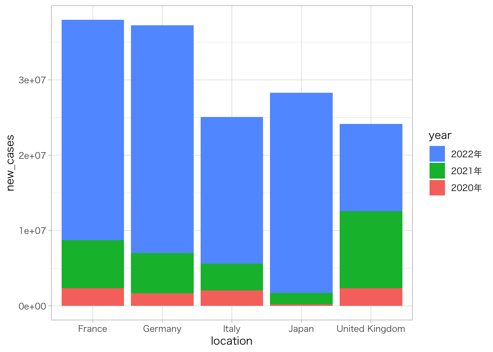
4.24 その他設定・保存
タイトル、目盛線、凡例、図表全体のフォント、マージンなどの各種設定を行います。
タイトル・キャプション
ggplot(data = mpg,
mapping = aes(x = cty, y = hwy, fill = class)) +
geom_point(shape = 21,
size = 2.0) +
labs(title = "車体クラス別の一般道燃費と高速道燃費", # 図表タイトル
caption = "（出所）EPA.gov", # キャプション
fill = "車体クラス") + # 凡例に使用するscaleのタイトル
theme(plot.title = element_text(size = 10, # 図表タイトルの文字サイズ
face = "bold", # 図表タイトルの書体
hjust = 0.5), # 図表タイトルの横整列位置
plot.caption = element_text(size = 8, # キャプションの文字サイズ
face = "plain", # キャプションの書体
hjust = 0.0)) # キャプションの横整列位置
パネル目盛線
ggplot(data = mpg,
mapping = aes(x = cty, y = hwy, fill = class)) +
geom_point(shape = 21,
size = 2.0) +
theme(panel.grid.major = element_line(color = "grey", # 主目盛線の色
linetype = "dashed", # 主目盛線の種類（solid / dashed / dotted / dotdash / twodash / longdash）
size = 0.2), # 主目盛線の太さ
panel.grid.minor = element_blank()) # 補助目盛り線は表示しない
凡例
ggplot(data = mpg,
mapping = aes(x = cty, y = hwy, fill = class)) +
geom_point(shape = 21,
size = 2.0) +
theme(legend.title = element_text(size = 8, # 凡例タイトルの文字サイズ
face = "bold", # 凡例タイトルの書体
hjust = 0.0), # 凡例タイトルの横整列位置
legend.text = element_text(size = 6), # 凡例ラベルの文字サイズ
legend.box.background = element_rect(color = "grey", # 凡例の枠線の色
size = 0.5), # 凡例の枠線の太さ
legend.margin = margin(t = 1, # 凡例の上マージン
b = 1, # 凡例の下マージン
r = 1, # 凡例の右マージン
l = 1, # 凡例の左マージン
unit = "mm"), # 凡例マージンの単位
legend.justification = c(1.0, 0.0), # 凡例の横整列位置・縦整列位置
legend.position = c(0.95, 0.05)) + # 凡例の横位置・縦位置
guides(fill = guide_legend(keywidth = unit(3, units = "mm"), # 凡例キーの幅
keyheight = unit(3, units = "mm"), # 凡例キーの高さ
direction = "vertical", # 凡例の整列方向（horizontal / vertical）
nrow = 3, # 凡例の行数
ncol = 3, # 凡例の列数
reverse = FALSE)) # 凡例順序の逆転
フォント・マージン設定
ggplot(data = mpg,
mapping = aes(x = cty, y = hwy, fill = class)) +
geom_point(shape = 21,
size = 2.0) +
theme(text = element_text(family = "YUGO", # 図表全体のフォント
size = 8), # 図表全体の無事サイズ
plot.margin = margin(t = 1, # 図表の上マージン
b = 1, # 図表の下マージン
r = 1, # 図表の右マージン
l = 1, # 図表の左マージン
unit = "mm")) # 図表マージンの単位
4.25 実例
実例1：世界の新型コロナ死亡率の箱ひげ図
# プロット用のデータの作成
data_plot <- data_owid %>%
dplyr::select(location, date, new_cases, new_deaths) %>%
dplyr::filter(date <= max(date) - 28) %>%
dplyr::mutate(year = lubridate::year(date)) %>%
dplyr::group_by(location, year) %>%
dplyr::summarise(across(c(new_cases, new_deaths), mean, na.rm = TRUE)) %>%
dplyr::mutate(mort_rate = 100 * new_deaths / new_cases,
year = str_c(year, "年"))# プロット
ggplot(data = data_plot,
mapping = aes(x = year, y = mort_rate, color = year, fill = year)) +
geom_hline(yintercept = 0, # 水平線の縦軸との交点
color = "gray", # 水平線の色
size = 0.5) + # 水平線の太さ
geom_boxplot(outlier.shape = NA, alpha = 0.25, size = 0.5) +
geom_jitter(alpha = 0.5, size = 1.0, shape = 21) +
scale_y_continuous(breaks = breaks_y <- seq(0, 100, 0.5), # 目盛
labels = breaks_y %>% sprintf(fmt = "%0.1f"), # 目盛ラベル
limits = c(0, 5), # 下限・上限値（指定しない場合はNA）
expand = expansion(mult = c(0.05, 0.05), add = c(0, 0))) + # 下限・上限値からの余白（multは余白率、addは余白幅）
labs(x = element_blank(), # X軸のタイトル
y = "新型コロナ感染者の致死率（％）") + # Y軸のタイトル
theme(axis.title = element_text(size = 8)) + # 軸タイトルの文字サイズ
labs(title = "世界各国の新型コロナ感染者の致死率（年別）", # 図表タイトル
caption = "（注）箱の中の横線は中央値を示す。2022年は直近4週間のサンプルを除外。\n（出所）Our World in Data、@naohat23") + # キャプション
theme(plot.title = element_text(size = 10, # 図表タイトルの文字サイズ
face = "bold", # 図表タイトルの書体
hjust = 0.5), # 図表タイトルの横整列位置
plot.caption = element_text(size = 8, # キャプションの文字サイズ
face = "plain", # キャプションの書体
hjust = 0.0)) + # キャプションの横整列位置
theme(panel.grid.major = element_line(color = "grey", # 主目盛線の色
linetype = "dashed", # 主目盛線の種類（solid / dashed / dotted / dotdash / twodash / longdash）
size = 0.2), # 主目盛線の太さ
panel.grid.minor = element_blank()) + # 補助目盛り線は表示しない
theme(legend.position = "none") + # 凡例の横位置・縦位置
theme(text = element_text(family = "YUGO", # 図表全体のフォント
size = 8), # 図表全体の無事サイズ
plot.margin = margin(t = 1, # 図表の上マージン
b = 1, # 図表の下マージン
r = 1, # 図表の右マージン
l = 1, # 図表の左マージン
unit = "mm")) # 図表マージンの単位
# 保存
ggsave(filename = "directory/filename.png", # 図表のファイル名
width = 12.00, # 図表の横サイズ
height = 9.00, # 図表の縦サイズ
units = "cm", # 図表のサイズ単位
dpi = 600) # 図表の解像度